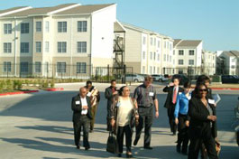
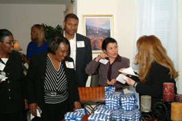

Rooted in community since 1988
Building community.
Creating opportunity.
Housing, economic development, and community revitalization for Houston’s Hispanic community and beyond.
Explore our projects
our community
with a reach across South Texas
nonprofit corporation
A place to live.
A chance to grow.
Strong neighborhoods begin with opportunity. AAMA-CDC was founded to address unmet needs in housing, economic development, and community revitalization.
Our work connects community needs with the development experience and partnerships to help meet them.
Places with a purpose.
Explore the housing and community developments that have shaped our work in Houston and South Texas.


More than buildings
Community is at the heart of our work.
From neighborhood gatherings to community development tours, our history is a story of people coming together around a shared future.
NewsGood communities start with a conversation.
Connect with Peter Clementi about AAMA-CDC, our development work, or opportunities to work together.